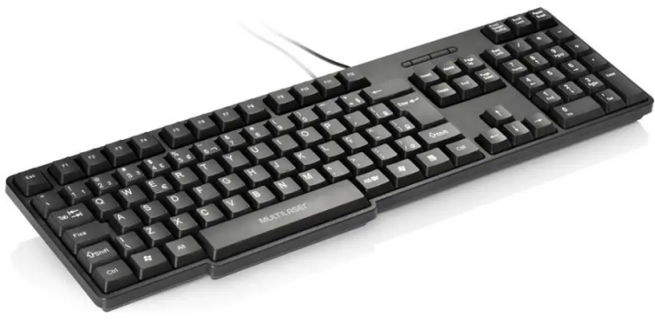

É um modelo simples, usado principalmente para trabalhar em escritórios. Sua principal função é facilitar a digitação. Por conta disso, suas teclas são focadas em aumentar a eficiência de tarefas. Ele não tem atalhos ou teclas extras para comandos específicos.
 Voltar